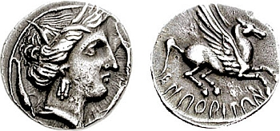

Los griegos
|  |
| Moneda de Emporion (III a.C.), con su típico Pegaso. Imagen de Classical Numismatic Group, Inc en Wikimedia Commons. Licencia CC BY-SA. |
A partir del siglo VII a.C. nuevos visitantes del oriente mediterráneo llegaron a la Península Ibérica: eran los griegos. Los navegantes griegos exploraron toda la costa mediterránea de la Península, a la que le dieron el nombre de Iberia. Luego se adentraron en las costas atlánticas.
Además de comerciar, los griegos fundaron algunas ciudades. A comienzos del siglo VI a.C. griegos procedentes de Masalia (Marsella), una colonia en el sur de Francia, fundaron Emporion (Ampurias, Gerona). No muy lejos de allí la gente de Masalia fundó ya en el siglo IV a.C. la colonia de Rhode (Rosas, Gerona).
La influencia económica, social y cultural de los griegos se extendió por toda la fachada mediterránea de la Península, sumándose a la influencia fenicia. Junto a los productos griegos, se extendieron sus técnicas, su alfabeto, su moneda y su modelo de ciudad-estado.
Importante
Los griegos llegaron a la Península Ibérica a partir del siglo VII a.C. Fundaron ciudades en la actual Cataluña, pero extendieron su influencia por toda la zona mediterránea.
Obra publicada con Licencia Creative Commons Reconocimiento No comercial Compartir igual 4.0